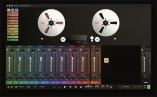

Ruminant Audio Works
MPC Plugin
Loader
Install plugins directly on your standalone MPC, online or from a USB stick.
Get the loaderLoader
MPC Plugin Loader
Make one FAT32 stick with USB Creator, then follow the guide for your MPC OS version.
- 3.9.1 and earlier · USB install prompt on Gen 1
- 3.10.1 and later · External Plugins on Gen 1 and Gen 2
MPC OS 3.10.0 is unsupported. Find your MPC OS version.
USB Creator Alpha 6
Download for macOS
Download for Windows x64
Loader ZIP for 3.10.1+
Alpha warranty notice
Catalogue
Vintage Vocoder FX
A free stereo vocoder insert for standalone MPCs, with eight note-tuned carrier oscillators, a multimode filter and left/right split routing.
Vintage Vocoder 1.6.0.5
Download for Gen 1 MPC
Download for Gen 2 MPC
Acknowledgements
Thank you, Open MPC
Open MPC led the way in opening standalone MPCs to third-party instruments and effects. Their tools, documentation and community catalogue have helped developers build for MPC and musicians discover new sounds. We’re standing on the shoulders of giants.
We built the on-device RAW MPC Plugin Loader using Open MPC’s build tools and VST2 runtime wrapper. We developed RAW’s USB Creator and installer for proprietary VSTs. RAW’s separate catalogue gives plugins whose source stays private a home, since Open MPC requires public source for a catalogue listing.
From RAW
TayPE
If you like what we’re doing here, check out TayPE, our full multitrack DAW for macOS. Start on the MPC, then bring your audio into TayPE to arrange, mix and finish.
Explore TayPE
Community & Support
Follow Along
Development updates, studio sessions, and behind-the-scenes from Ruminant Audio Works.
Get in Touch
Bug to report, question, or just want to say hi? Drop us a line — anonymous is fine, but leave your email if you'd like a reply.